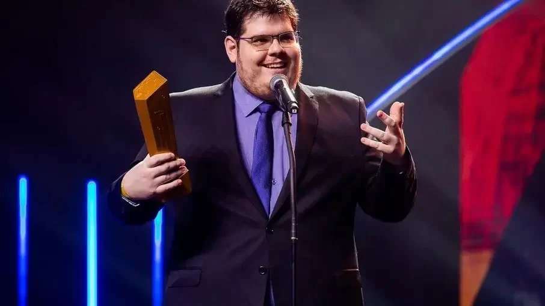

Sobre Casimiro Miguel
Casimiro Miguel Vieira da Silva Ferreira, mais conhecido como Casimiro ou Cazé, é um apresentador, comentarista esportivo, influenciador digital, humorista, youtuber e streamer brasileiro. Além de fazer conteúdo para a internet nos seus canais da Twitch e do YouTube, é um dos proprietários da CazéTV. É apontado como um dos maiores streamers do Brasil.